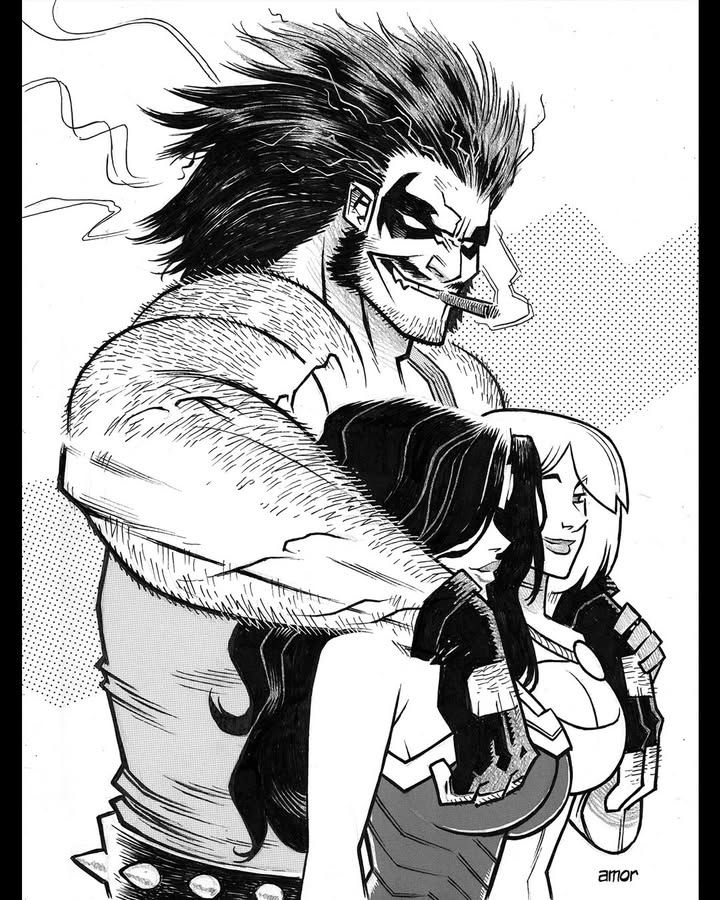

Lobo es un cazador de recompensas intergaláctico y mercenario czarniano. Conocido por su actitud ruda, su sentido del humor negro, su fuerza sobrehumana y su motocicleta espacial, Lobo es uno de los antihéroes más icónicos y despiadados del universo de DC Comics. Es prácticamente inmortal y el último sobreviviente de su especie (porque él mismo destruyó a todos los demás).